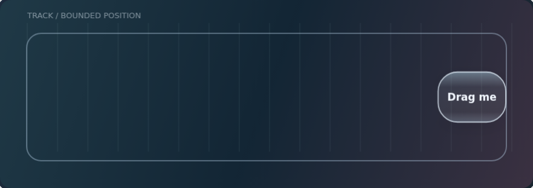
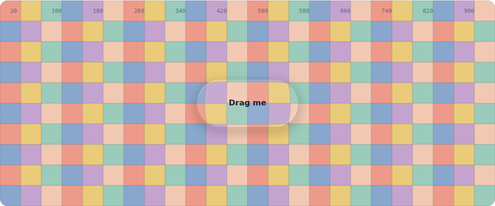
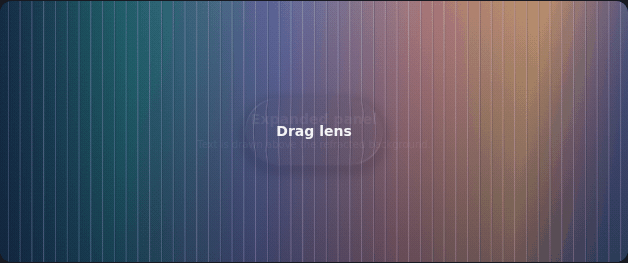
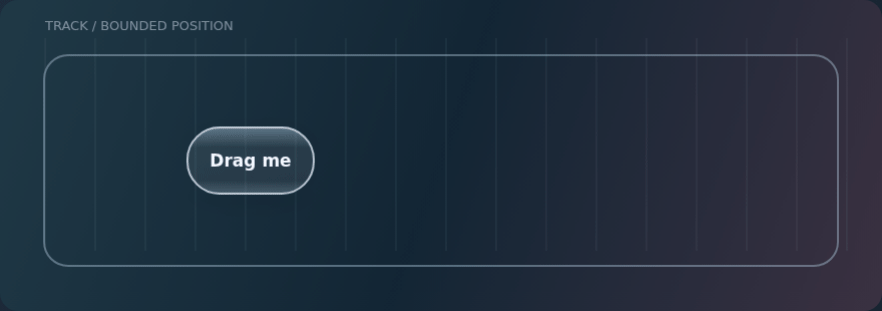
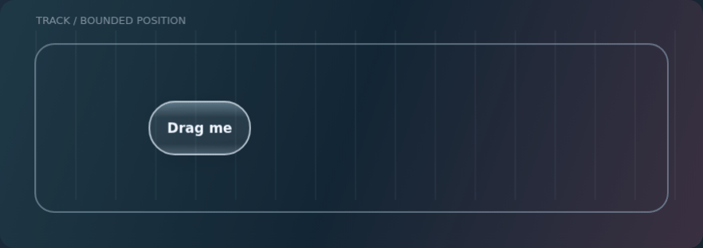

The Liquid Glass field guide
An Apple-sourced design reference for Localica. How surfaces should respond, how light establishes their shape, and how to keep the result readable and fast.
Apple evidence · Optical findings · Localica specification · Interactive controls · Live lab · Project docs

Choose a path
| I want to… | Start here |
|---|---|
| Understand the feeling we are aiming for | Fluid interaction foundations |
| Check what Apple actually says | Evidence atlas with video timestamps |
| See our implementation rules | Localica specification |
| Design settings, sliders, switches and buttons | Control roles, states and review exercises |
| Drag, reverse, refract and change material parameters | Live WebGL lab — runs in your browser |
| Check measured displacement and model limitations | Optical findings and reproducible experiments |
| Review motion without running anything | Expand the demonstrations below |
| Check what the app currently promises | Current interface contract |
The guide separates Apple evidence, Localica models, and shipped behavior. It is a research reference, not a claim of pixel-identical iOS rendering. The hosted field guide has the same notes and navigable links.
Refraction study

The lab samples an original backdrop through two selectable inverse-map models. Compare edge displacement, thickness, blur, contrast and synthetic reflection independently. Its coordinate diagnostic and reproducible browser tests check actual shader output. Run and verify.
Actual shader morph, captured at fixed simulation steps

Original WebGL output; deterministic 30 Hz simulation captures, not a phone frame-rate measurement or an Apple reference.
Motion studies
These earlier original illustrations explain the spring/strain idea with simple gradients. They predate the refracting lab above and do not show production optics. Animations remain inside opt-in sections.
Boundary pressure and recovery

The target stays bounded. Shape communicates the remaining pressure. Compare with shape carries impact.
One surface changes its shape

A persistent identity connects the two sizes. The production design also needs matching optics, shadow, content and focus. See input and motion.
Read this before using the rules
The specification defines the shared system and its acceptance checks. Physical-device performance still needs review; optical materialization remains deferred. Current selection lenses intentionally appear immediately; their entrance motion awaits #107. Requested glass-on-content and nested controls remain explicit departures from Apple's usual layer guidance.
Update evidence and specification together when guidance or owner decisions change; source review dates live in the atlas. Keep release history in Git and Releases. The lab and diagrams are original project assets; no Apple video frames or font files are included.